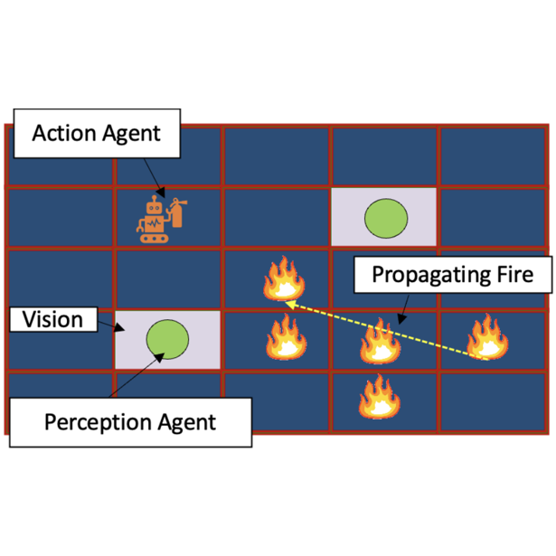

|
Kin Man Lee I'm a 2nd year Robotics PhD Student in the School of Interactive Computing at Georgia Tech. I'm part of the CORE Robotic Lab, directed by Prof. Matthew Gombolay. Before starting my PhD, I completed my M.S. in Robotics at Georgia Tech and my B.S. in Computer Engineering at the University of Illinois at Urbana-Champaign. I've also spent several years as a software engineer specializing in autonomous vehicle technology. Email | Google Scholar | Twitter | LinkedIn | Github |

|
Research
My research interests lie broadly between the intersection of machine learning, controls, and human-robot interaction. I am particularly interested in developing methods for robots to learn agile motions that can actively adapt to human heterogeneity.
I look forward to a future where humans and robots can work together seamlessly in everyday tasks and aspire to contribute towards making this vision a reality!
|
|

|
Heterogeneous Policy Networks for Composite Robot Team Communication and Coordination
Esmaeil Seraj*, Rohan Paleja*, Luis Pimentel, Kin Man Lee, Zheyuan Wang, Daniel Martin, Matthew Sklar, John Zhang, Zahi Kakish, Matthew Gombolay IEEE Transactions on Robotics (T-RO), 2024 We introduce Heterogenous Policy Networks (HetNet), a graph-attention MARL framework for learning coordination and communication strategies for heterogeneous multi-agent teams. |

|
Interactive and Explainable Robot Learning: A Comprehensive Review
Esmaeil Seraj, Kin Man Lee, Zulfiqar Zaidi, Qingyu Xiao, Zhaoxin Li, Arthur Scaquetti do Nascimento, Sanne van Waveren, Pradyumna Tambwekar, Rohan Paleja, Devleena Das, Matthew Gombolay Foundations and Trends in Robotics, 2024 A comprehensive review of the latest works in interactive and explainable robot learning. |

|
The Effect of Robot Skill Level and Communication in Rapid, Proximate Human-Robot Collaboration
Kin Man Lee*, Arjun Krishna*, Zulfiqar Zaidi, Rohan Paleja, Letian Chen, Erin Hedlund, Mariah Schrum, Matthew Gombolay International Conference on Human-Robot Interaction (HRI), 2023 ArXiv We develop an safe robotic table tennis system for studying agile, proximate human-robot collaboration and conduct a human-subject experiment to assess how attributes of the robot can impact team dynamics, and overall performance. |

|
Athletic Mobile Manipulator System for Robotic Wheelchair Tennis
Zulfiqar Zaidi*, Daniel Martin*, Nathaniel Belles, Viacheslav Zakharov, Arjun Krishna, Kin Man Lee, Peter Wagstaff, Sumedh Naik, Matthew Sklar, Sugju Choi, Yoshiki Kakehi, Ruturaj Patil, Divya Mallemadugula, Florian Pesce, Peter Wilson, Wendell Hom, Matan Diamond, Bryan Zhao, Nina Moorman, Rohan Paleja, Letian Chen, Esmaeil Seraj, Matthew Gombolay IEEE Robotics and Automation Letters (RA-L), 2023 Project page | ArXiv We present ESTHER, an autonomous wheelchair tennis robot that operates on a regulation-sized tennis court. |
|
Adapted from Jon Barron's template. |